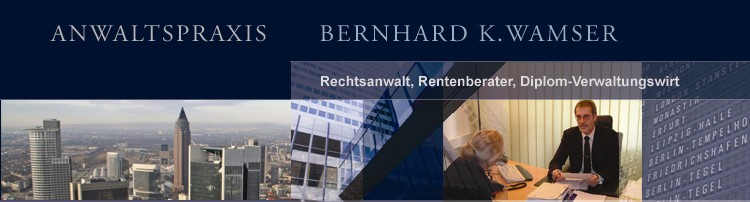

|  | |
|
Wir stehen Ihnen in allen Rechts- und Sachfragen in allen Verfahrensabschnitten zur Verfügung und setzen unser gesamtes Wissen und unsere Erfahrung für die Lösung Ihres Rechtsfalles ein. Recht haben ist eine, Recht bekommen eine andere Sache. Seit mehr als 10 Jahren stehen wir unseren Mandanten zur Seite und engagieren uns für die Durchsetzung Ihrer Rechte. In allen Fragen des Sozialversicherungsrechts stehen Sie häufig Verwaltungsbehörden gegenüber, die Ihre Rechte einschränken und Leistungen versagen. Was Sie hinnehmen müssen und wie Sie erfolgreich vorgehen, wenn Sie als Betroffener die Regelung nicht akzeptieren wollen, das klären wir mit Ihnen in einem umfassenden fachkompetenten Beratungsgespräch und begleiten Sie während des gesamten Verfahrens. Häufig können wir bereits eine außergerichtliche Klärung erwirken und helfen Ihnen Kosten und unnötigen Zeitaufwand zu ersparen. Übernimmt die Krankenkasse beantragte Kosten nicht ? Wird durch die Deutsche Rentenversicherung oder das Versorgungswerk keine oder eine zu geringe Rente bewilligt ? Wird Ihre Erwerbs- oder Berufsunfähigkeit nicht anerkannt ? In diesen exemplarisch aufgeführten Rechtsfällen zielt unsere Beratung auf eine optimale Lösung und die maximale Versorgung für Sie. Wir erstellen und analysieren Ihren Sachverhalt und legen die Vorgehensweise mit Ihnen fest und informieren Sie über alle Prozesshandlungen. | |
|
ANWALTSPRAXIS |
|